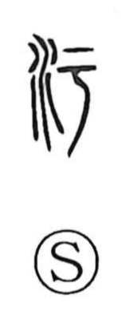

汚

Uncategorized
Kun: kegasu, kegareru, kegarawashii, yogosu, yogoreru, kitanai | On: o, u
dirty ・ to soil ・ to sully ・ to defile ・ to become dirty
Explanation
The original form is 汙, with 于 as the phonetic. 于 depicts a knife whose tip bends slightly, and by extension suggests gentle curving or a hollowed shape. Set beside the water element, the character pictures water gathered in a shallow hollow—a small puddle. Because such hollowed places of water are prone to becoming befouled, the graph came to mean to become dirty or defiled, and by extension to soil or sully.